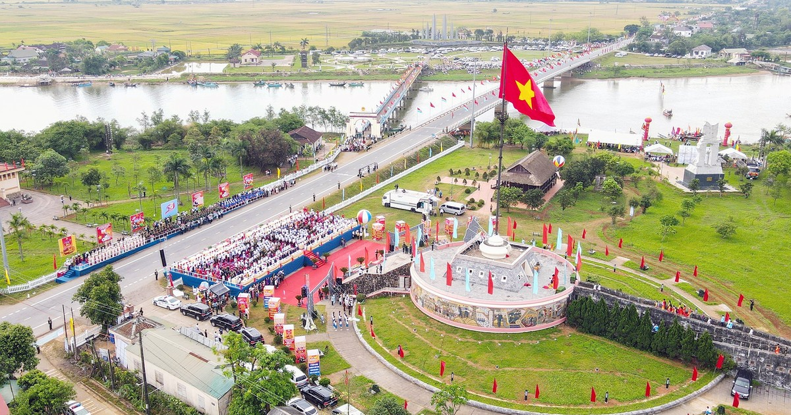
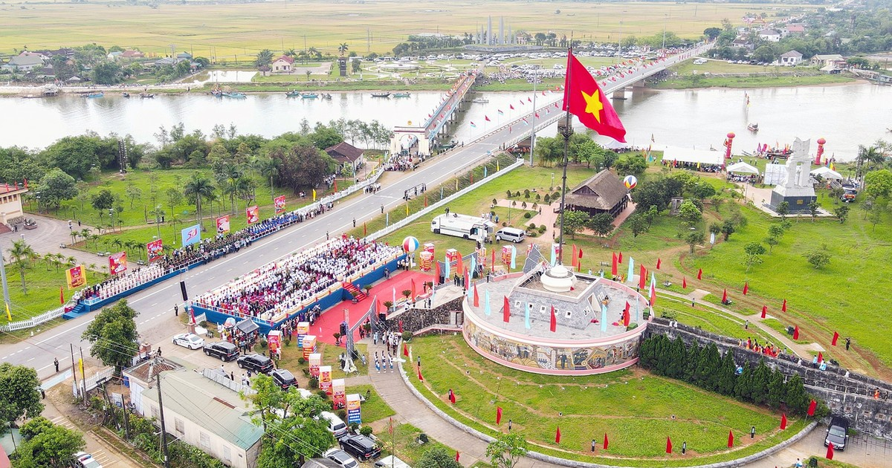
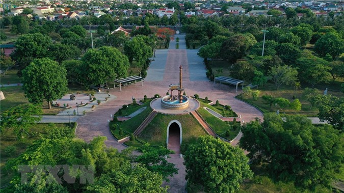
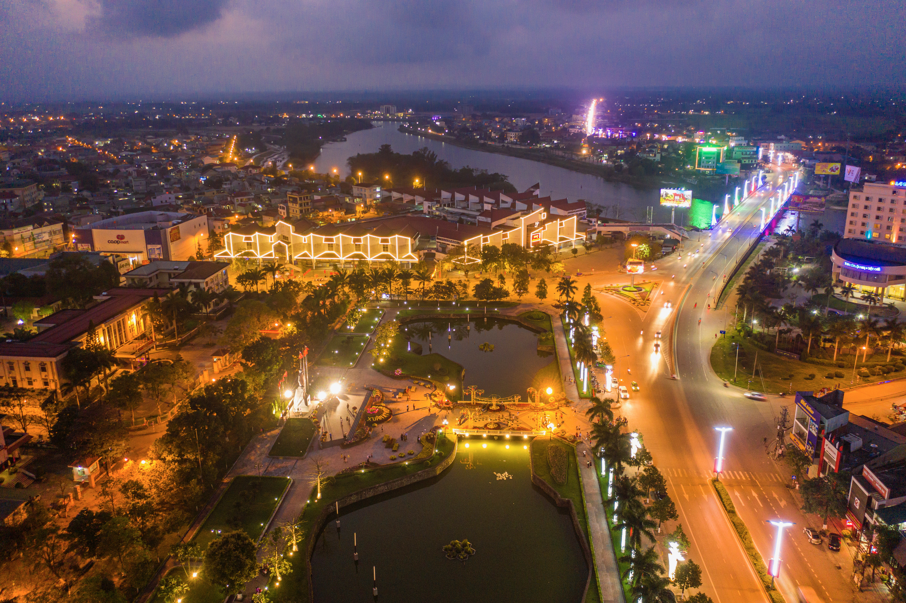
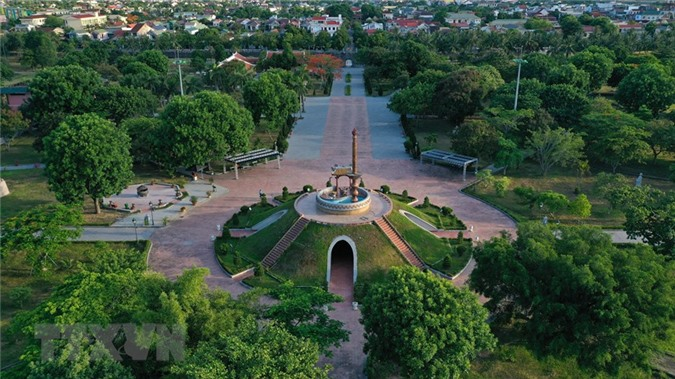
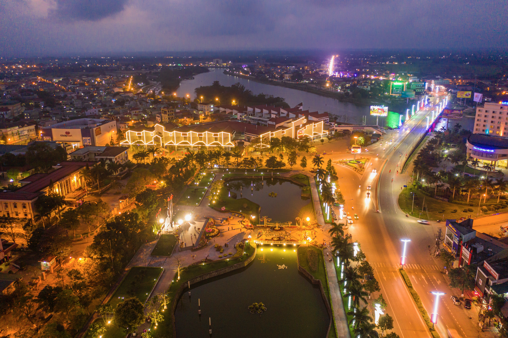

Văn hóa/Lịch sử
Ẩm thực: Với vị trí ven biển và sông ngòi, Quảng Trị có nhiều đặc sản biển ngon như cá lăng, cá điêu hồng, ghẹ... Ngoài ra, các món ăn đặc trưng như bún mắm, bún chả cá, bún bò Huế cũng là điểm đến không thể bỏ qua đối với những ai muốn thưởng thức ẩm thực miền Trung.
Công trình, kiến trúc: Cầu Hiền Lương, Vương cung Thánh Đền Đức Mẹ La Vang, di tích Khe Sanh Combat Base, thành cổ Quảng Trị. Những công trình và kiến trúc này không chỉ là những biểu tượng văn hóa và lịch sử của Quảng Trị mà còn là những điểm thu hút du lịch quan trọng của tỉnh này.
Văn hóa Quảng Trị là một nơi sinh sống của nhiều dân tộc thiểu số như người Kinh, người Cơ Tu, người Bru-Vân Kiều... Với những nét văn hóa truyền thống đa dạng, các lễ hội văn hóa dân gian như lễ hội Cô Tô, lễ hội Kate... là cơ hội để du khách khám phá và tìm hiểu về văn hóa độc đáo của từng dân tộc.
 

 


